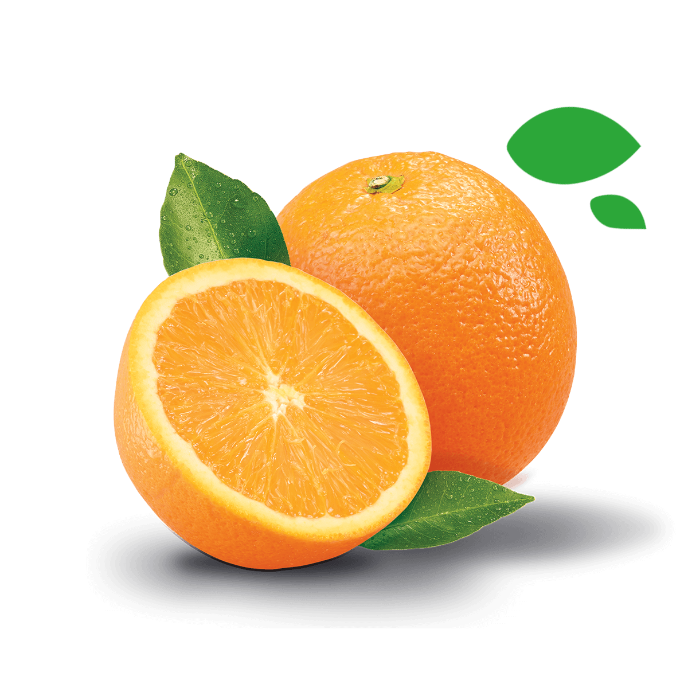
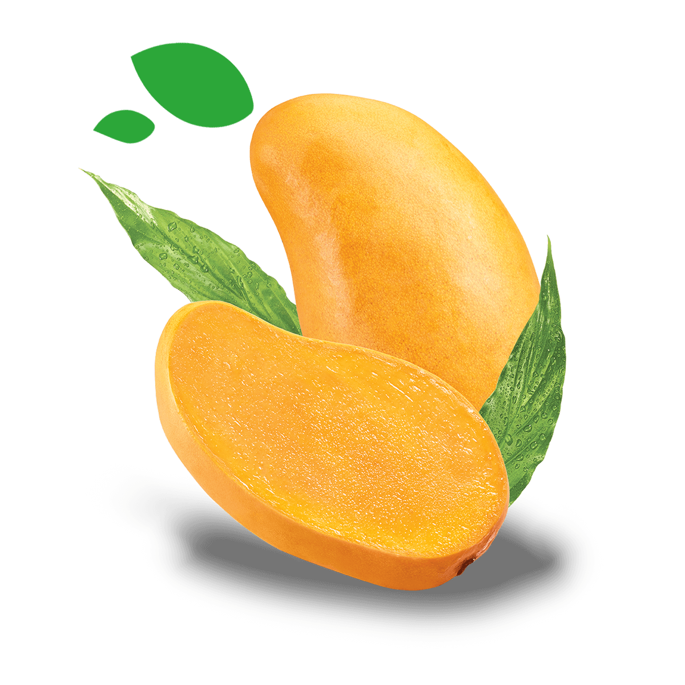
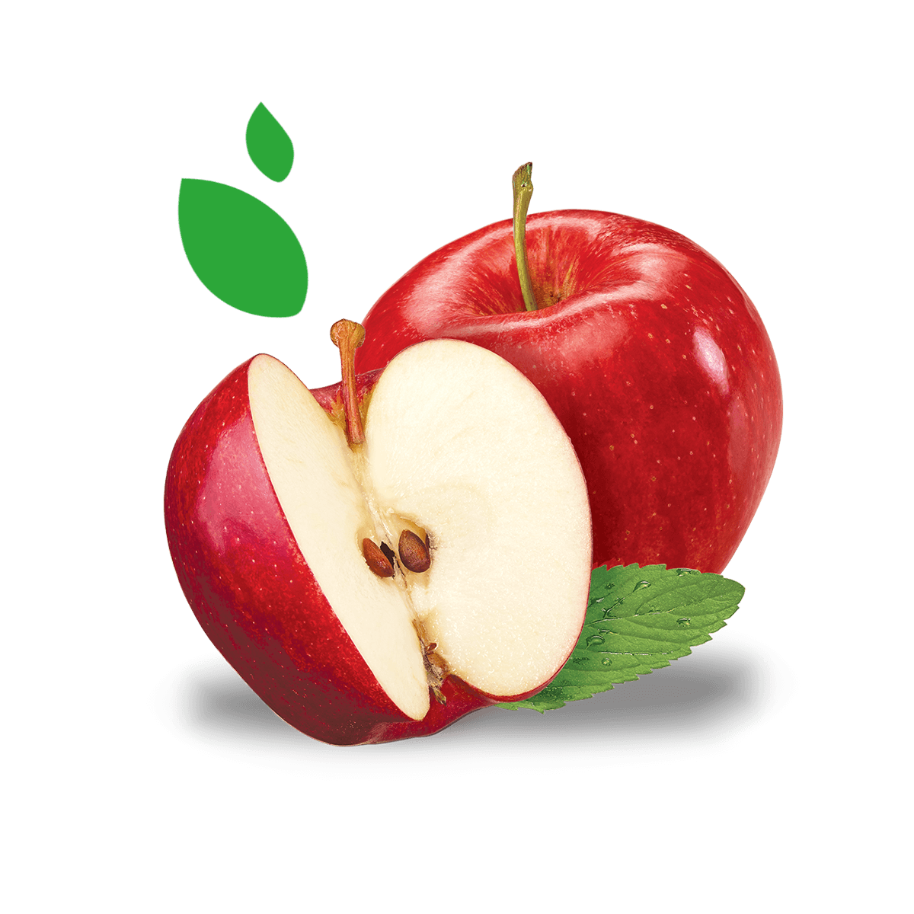

El compromiso con el campo mexicano y sus comunidades ha sido parte del modelo de negocio de Grupo Jumex desde nuestro origen.
Invertimos y llevamos recursos que dan vida al campo, para poder cosechar sus mejores frutos. Estos frutos nos inspiran para crear experiencias que alimentan a nuestros consumidores, a través de bebidas de calidad y de las actividades culturales que promueve el Grupo.
Fortalecemos al campo mexicano con una relación comercial que detona su crecimiento y desarrollo. Promovemos nuestro campo como el mejor productor de fruta e insumos para elaborar los alimentos y bebidas con más altos estándares de calidad en el mercado.

Naranja
Se caracteriza por su jugosidad, pulpa, dulzor, rica variedad de aromas, color intenso y por ser fuente de vitamina C.

Mango
El mango mexicano lo podemos encontrar en diferentes formas y tamaños con distintas tonalidades desde los amarillos, rosadas, rojizas, violetas y verdes. Su pulpa es de color amarillo con aroma dulce y jugosa.

Manzana
La manzana mexicana tiene gran variedad de colores que van desde verdes, amarillos hasta rojos, de diferentes tamaños dependiendo de la variedad. Son firmes y jugosas.
La guayaba se caracteriza por tener colores amarillos, con un fuerte aroma frutal, su pulpa es dulce, cremosa y suave al paladar.
Se caracteriza por sus gajos rojos, la jugosidad de su pulpa y su singular sabor dulce-amargo.
La pera mexicana tiene apariencia cónica, su piel es de color verde que se transforma en amarillo cuando la fruta alcanza la madurez, su pulpa es blanca y jugosa.
El durazno mexicano se caracteriza por sus colores amarillos y rojizos; su aroma frutal y dulce con una consistencia firme y jugosa.

¿Tienes alguna pregunta?
Contactanos, estamos aqui para responder tus dudas